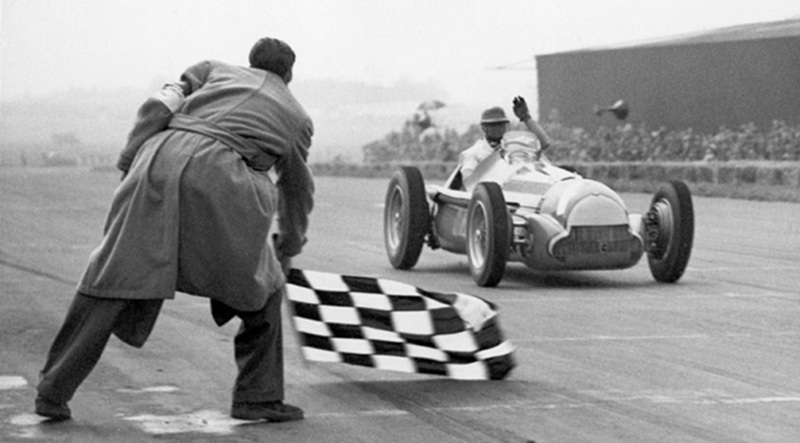
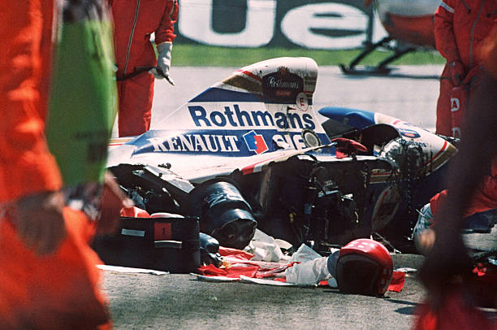
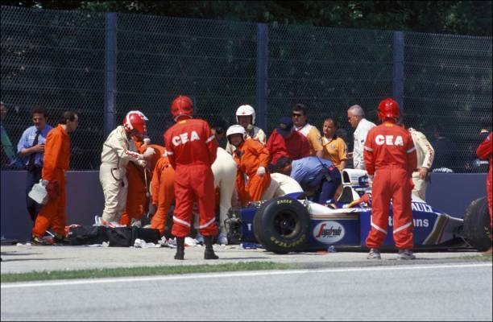
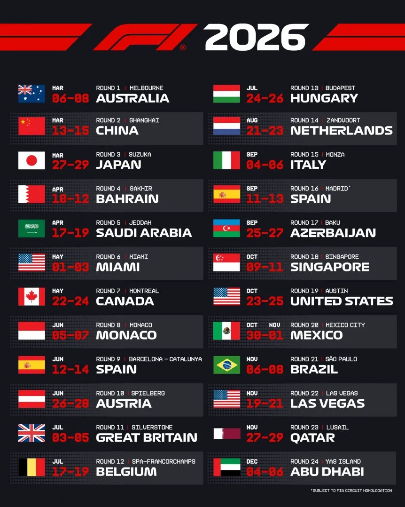

Los orígenes
La historia de la Fórmula 1 comenzó mucho antes de la creación oficial del campeonato. Uno de los primeros antecedentes del automovilismo organizado fue la París-Rouen de 1894,una competencia celebrada en Francia que reunió a algunos de los primeros automóviles de la época. Estas pruebas iniciales ayudaron a demostrar las posibilidades del automóvil y sentaron las bases de las futuras carreras deportivas.
El siguiente gran paso llegó en 1906, cuando el Automobile Club de France organizó cerca de Le Mans el que suele considerarse el primer Grand Prix de automovilismo de la historia. A partir de entonces, los Grandes Premios se hicieron cada vez más importantes en Europa y comenzaron a desarrollarse bajo reglamentos técnicos que buscaban ordenar la competencia y establecer condiciones comunes entre los participantes.
Durante las décadas siguientes, fabricantes como Alfa Romeo, Mercedes-Benz, Auto Union, Bugatti y Maserati compitieron en estas pruebas y contribuyeron al desarrollo tecnológico de los autos de carrera. Con el tiempo se fueron unificando distintas normas sobre aspectos como el peso, la cilindrada y los motores, dando origen al concepto de una “fórmula”, es decir, un conjunto de reglas técnicas que todos los competidores debían respetar.
El nacimiento del Campeonato Mundial
Tras la Segunda Guerra Mundial, estas normas se reorganizaron y dieron forma a la categoría que sería conocida como Fórmula 1. Finalmente, el 13 de mayo de 1950, el circuito de Silverstone fue escenario de la primera carrera puntuable del Campeonato Mundial de Fórmula 1. La competencia fue ganada por Giuseppe “Nino” Farina, con Alfa Romeo, quien, luego de los siete Grandes Premios puntuables de aquella temporada, también se convertiría en el primer campeón mundial de la historia de la F1. Finalizó el campeonato con 30 puntos, seguido por el argentino Juan Manuel Fangio.
El primer Campeonato Mundial de Fórmula 1 estuvo compuesto por siete Grandes Premios, aunque las seis carreras europeas fueron muy diferentes de las 500 Millas de Indianápolis, incluidas entonces en el calendario. La temporada estuvo dominada por Alfa Romeo, cuyos autos ganaron todas las pruebas europeas. Farina y Fangio llegaron a la última fecha, disputada en Monza, con posibilidades de quedarse con el título. Allí, el argentino debió abandonar por problemas mecánicos, mientras Farina consiguió la victoria y aseguró el campeonato. El tercer lugar del torneo quedó en manos de otro piloto de Alfa Romeo, Luigi Fagioli, confirmando el amplio dominio de la marca italiana durante aquella temporada inaugural.

De Europa al mundo, la expansión de la Fórmula 1
En sus primeros años, la Fórmula 1 estuvo fuertemente concentrada en Europa. El campeonato inaugural de 1950 contó con solo siete fechas, seis de ellas disputadas en circuitos europeos; la excepción fueron las 500 Millas de Indianápolis, que formaban parte del campeonato aunque tenían características muy diferentes y eran habitualmente ignoradas por los pilotos europeos. La verdadera expansión internacional comenzó en 1953, cuando el campeonato llegó por primera vez a Sudamérica con el Gran Premio de Argentina. Durante las décadas de 1950 y 1960 también se incorporaron carreras en América del Norte y África, mientras escenarios como Silverstone, Monza, Mónaco y Spa-Francorchamps se consolidaban como símbolos permanentes de la categoría.
Durante las décadas de 1970, 1980 y 1990, el calendario continuó extendiéndose y la Fórmula 1 comenzó a alejarse definitivamente de su carácter principalmente europeo. Nuevas sedes permitieron llevar el campeonato a diferentes regiones del planeta y, hacia mediados de los años 80, Australia se incorporó al calendario. Al mismo tiempo, el crecimiento de la velocidad y las prestaciones de los autos obligó a transformar muchos circuitos históricos y a desarrollar mayores medidas de seguridad. Uno de los momentos más importantes ocurrió en 1994, cuando las muertes de Roland Ratzenberger y Ayrton Senna durante el fin de semana de Imola aceleraron cambios en los autos, las pistas y los sistemas de protección. La expansión geográfica de la categoría comenzó así a estar acompañada por una creciente profesionalización de la organización y de los estándares de seguridad.
Imágenes de la tragedia de Imola de 1994.


La Fórmula 1 moderna
A comienzos del siglo XXI, la expansión internacional de la Fórmula 1 se aceleró. El calendario incorporó nuevas sedes fuera de Europa y consolidó su presencia en Asia y Medio Oriente. En 2004, Bahréin se convirtió en el primer país de Medio Oriente en organizar un Gran Premio de Fórmula 1, mientras que posteriormente se sumaron destinos como China, Singapur, Abu Dhabi, Arabia Saudita y Qatar. Al mismo tiempo, circuitos históricos como Monza, Silverstone, Spa-Francorchamps y Mónaco continuaron formando parte del campeonato, combinando así la tradición europea con nuevos mercados internacionales.
La categoría también experimentó una profunda transformación tecnológica. Desde 2014, la Fórmula 1 utiliza unidades de potencia híbridas turbo, combinando motores de combustión con sistemas eléctricos de recuperación de energía. La aerodinámica, la telemetría y el análisis de datos adquirieron una importancia cada vez mayor, mientras la seguridad continuó evolucionando mediante nuevos estándares para autos y circuitos. En este contexto surgieron extensos períodos de dominio, como el de Mercedes y Lewis Hamilton durante gran parte de la era híbrida, seguido posteriormente por el crecimiento de Red Bull y Max Verstappen.
Para 2025, año del 75.º aniversario del Campeonato Mundial, la Fórmula 1 alcanzó un calendario de 24 Grandes Premios distribuidos en cinco continentes, muy lejos de las siete pruebas que habían formado la temporada inaugural de 1950. Australia abrió el campeonato y Abu Dhabi volvió a cerrarlo, mientras el recorrido anual incluyó carreras en Europa, Asia, América y Medio Oriente. Esta dimensión mundial resume la transformación de la categoría: de un campeonato nacido alrededor de los Grandes Premios europeos a uno de los espectáculos deportivos internacionales con mayor alcance geográfico.
Si ya sos todo un fan, acá podés seguir el calendario 2026

Continuá recorriendo la historia
Podés profundizar el recorrido histórico en las siguientes secciones del sitio.